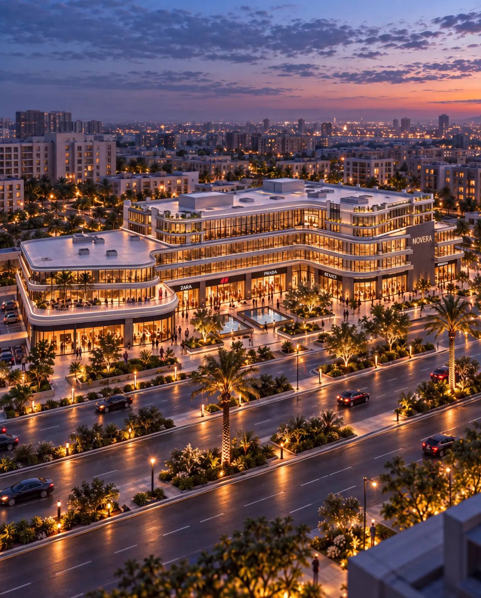
An urban landmark
NOVERA
A new rhythm for the city
Not an object in the capital.
A piece of its pulse.
NOVERA is imagined as a layered urban destination where architecture, landscape and daily life move as one composition.
Curved stone, transparent edges and planted terraces soften the scale, turning a commercial address into a sequence of arrivals, encounters and framed horizons.
- Location
- New Administrative Capital, Egypt
- Typology
- Retail + Mixed Use
- Visual study
- Architecture / Atmosphere / Life
- Direction
- Mohannad Haikal
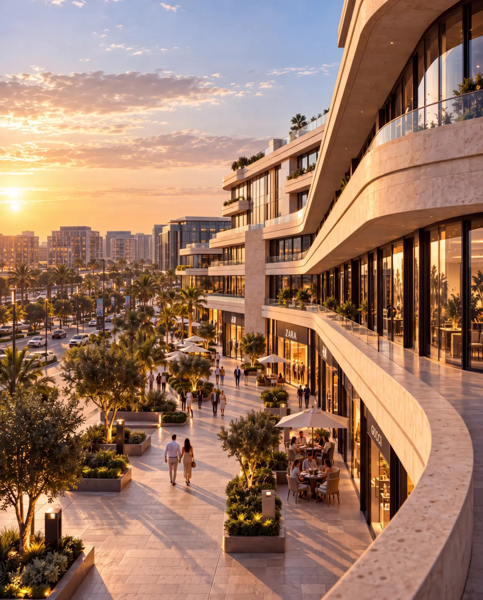
Stone catches the last light. Glass holds the city. Landscape dissolves every threshold.
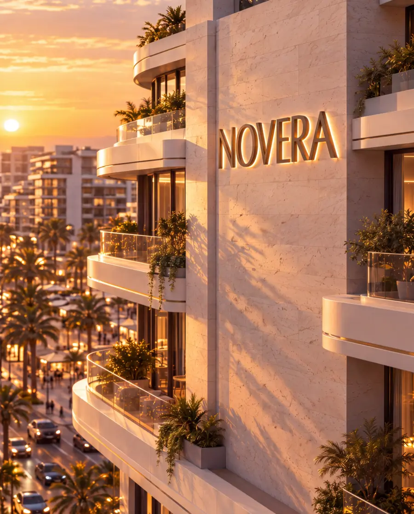
Move through
the architecture.
Scroll controls the journey. A dedicated landscape film will inhabit this chapter in the final release.
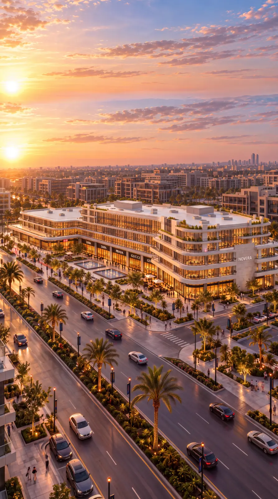
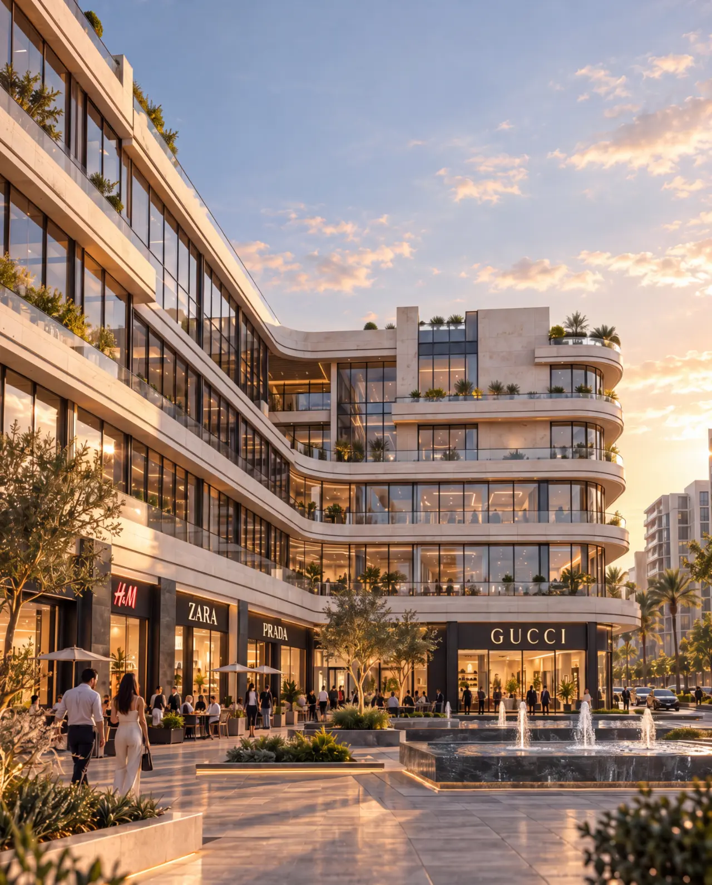
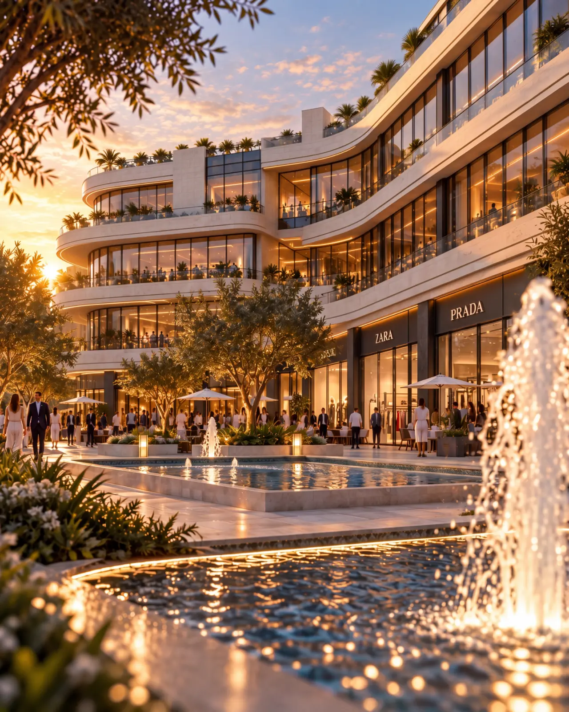
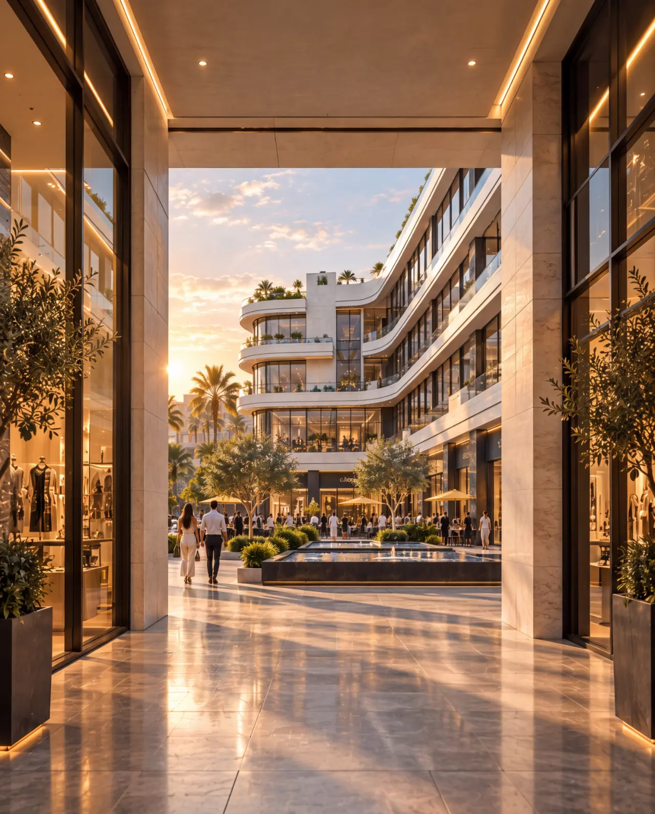
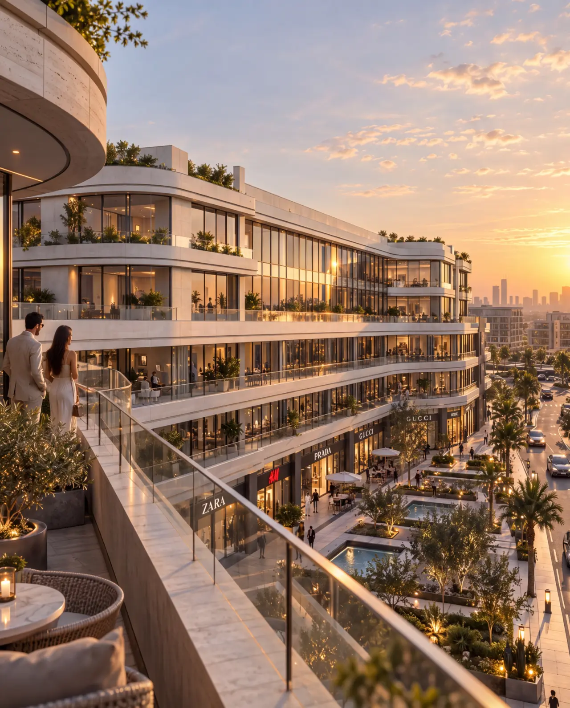
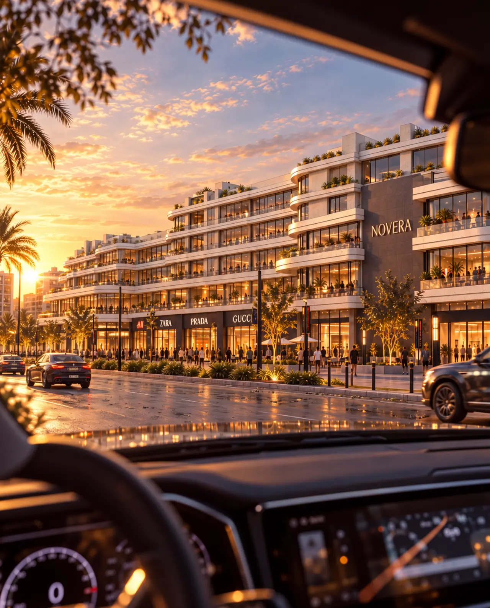
Scroll to move through NOVERA
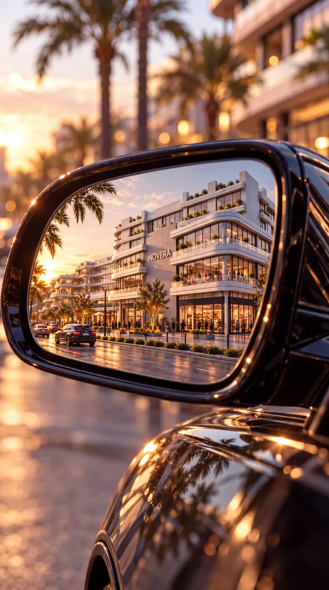
and desire
The city is not observed from a distance. It is encountered in fragments: a reflection, a shadow, a turn, the last light on stone.
Architecture
in frames.
Sixteen architectural views. Thirteen intimate fragments. One continuous atmosphere.
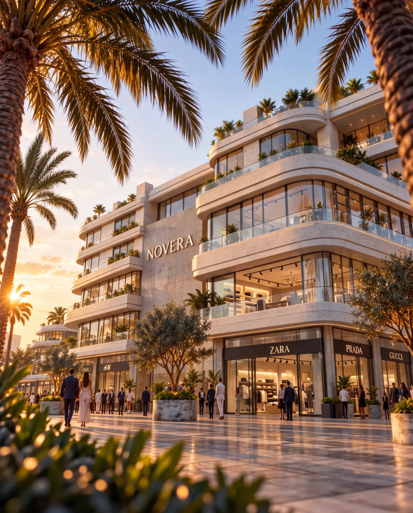
The city
moves here.
Architectural visualization and visual direction by Mohannad Haikal.
Return to beginning ↑